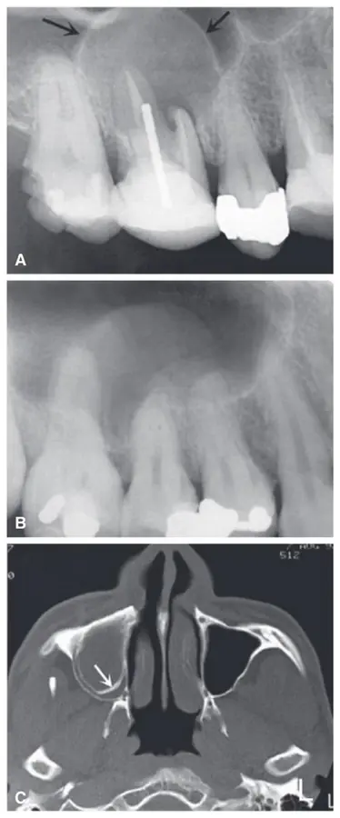
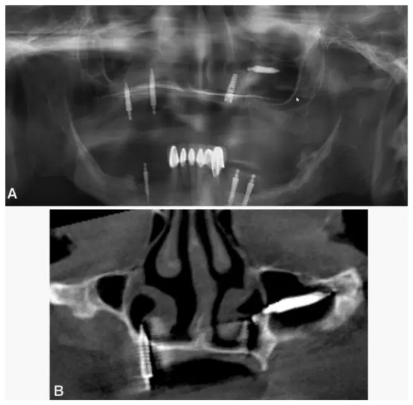

نسخه استخراجشده؛ ترجمه یا تأیید علمی انجام نشده است. وضعیت: captured
یک عدد که جایگاه دندانپزشک را در بیماری سینوسی مشخص میکند: «شاید ۱۰٪ اپیزودهای التهابی سینوس ماگزیلاری در نتیجهی عفونتهای دندانی پدید میآیند، که اغلب سینوزیت ادنتوژنیک نامیده میشود.»

و سازوکارش را دقیق بدان: ضایعات التهابی مانند بیماری پریودنتال یا بیماری التهابی پریاپیکال میتوانند موکوزیت موضعی در کف مجاور آنتروم بسازند. علتش انتشار میانجیهای التهابی به فراسوی کف آنتروم، به درون پریوستئوم و پوشش مخاطی سینوس است.
و دو ویژگی که این موکوزیت را از موکوزیتهای دیگر جدا میکنند: «مخاط ضخیمشده معمولاً درست بالای ضایعهی التهابی مرکز دارد»، و «معمولاً ظرف روزها یا هفتهها پس از درمان موفق علت زمینهای برطرف میشود». پس اگر مرکز ضخیمشدگی دقیقاً بالای یک دندان مشکلدار باشد، تشخیصت را نوشتهای.
و حالا زیباترین نشانهی این درس — استخوانسازی نو پریوستئال: اگزودای ضایعهی التهابی از مرز کورتیکال کف آنتروم عبور میکند، پوشش پریوستئال را جدا و بلند میکند، و سلولهای بنیادی پرتوان لایهی استئوپروژنیتور پریوستئوم را به تمایز وامیدارد. نتیجه: «یک یا چند لایهی نازک استخوان نو مجاور آپکس ریشهی دندان درگیر.»
و امضایش: «حضور یک یا چند لایهی هالهمانند استخوان نو، ویژگی مشخصهی استخوانسازی نو پریوستئال بر اثر التهاب است.» و استخوان نو باید درست بالای ضایعهی التهابی مرکز داشته باشد.
و کیستها و نئوپلاسمهای ادنتوژنیک — شایعترین ضایعات برونزا: «بیماری التهابی پریاپیکال و کیستهای ادنتوژنیک، مانند کیست دنتیجروس، شایعترین ضایعات برونزایی هستند که به سینوسهای ماگزیلاری تجاوز میکنند.» و کیست دنتیجروس را از کراتوسیست ادنتوژنیکی که رابطهی پریکرونال دارد، با دیدن رابطهی ضایعه با محل اتصال مینا و سمان در CBCT یا MDCT آسانتر جدا میکنی. با رشد پیوسته، مرزهای سینوس را جابهجا میکنند و حجم فضای هوایی را کم میکنند، تا آنجا که «مرز ضایعه از مرز سینوس غیرقابل تفکیک شود و تنها یک خط رادیواوپک نازک محتوای ضایعه را از حفرهی سینوس جدا کند».
و همان قاعدهی طلایی درس دوم، اینجا صریح میشود: «این ظاهر در تضاد با ضایعات درونزای سینوس است که دور محیطشان کورتکس نشان نمیدهند.» و «هرچند کیستهای ادنتوژنیک میتوانند شکلی شبیه کیست کاذب احتباسی داشته باشند، تنها کیستهای ادنتوژنیک باید کورتکس محیطی نشان دهند».
و باقی ویژگیها: محیط با کانتور خمیده یا هیدرولیک؛ ساختار داخلی همگن و رادیواوپک نسبت به هوا؛ برخی نئوپلاسمها سپتاسیون ظریف یا درشت یا نواحی کلسیفیکاسیون دیستروفیک میسازند. و وقتی ضایعه تقریباً همهی فضای هوایی را میگیرد، «فضای هوایی باقیمانده میتواند به شکل یک هلال نازک یا زین روی کیست یا نئوپلاسم دیده شود».
و اثر بر دندانها: جابهجایی دندانهای مجاور و تحلیل خارجی ریشه، «که اغلب یک لبهی تیز و خمیده میسازد که جبههی رشد کیست یا نئوپلاسم را بازتاب میدهد». و لامینا دورا و فضای لیگامان پریودنتال میتوانند از دست بروند.
و نشانهی دو کورتکس — ابزار نجات وقتی همهچیز سفید شده است: وقتی کیست بزرگ کل حفره را محو کرده و تصویر شبیه رینوسینوزیت شده، «ارزیابی با یافتن ناحیهای که در آن هم کف جابهجاشدهی سینوس و هم دیوارهی سالم سینوس در مجاورت هماند تسهیل میشود؛ این بهعنوان نشانهی «دو کورتکس» شناخته میشود.»
و دو سرنخ کمکی دیگر: «دیوارهی کیست اغلب کانتور هیدرولیکتری از دیوارهی سینوس دارد»، و کیستی که کل حفره را محو کرده «معمولاً گسترش دیوارهی داخلی را در ناحیهی مئاتوس میانی میسازد» و «کانتور سیگموئید طبیعی دیوارهی خلفی-جانبی سینوس میتواند در نمای محوری تغییر کرده باشد».
و یک پایان غافلگیرکننده: «با درمان یا گاهی بدون آن، کیست ادنتوژنیکِ مجاور سینوس ممکن است فرو بریزد و ترمیم شود. نتیجهی نهایی، ظاهر یک استخوانسازی نامنظم با مرکز کمتضعیف است که از کف سینوس به سمت بالا بیرون میزند.» و این باید از نئوپلاسم استخوانساز مانند استئوما یا فیبروم اُسیفایینگ تفکیک شود.
و دیسپلازیهای استخوانی هم همین بازی را میکنند: دیسپلازی سمنتو-اُسئوس پریاپیکال و فلورید میتوانند کف آنتروم را مانند کیست جابهجا کنند. و دیسپلازی فیبروس اثر تودهای بیشتری دارد. تفکیکش از فیبروم سمنتو-اُسیفایینگ با دو معیار است: مرز دیسپلازی فیبروس بدمرز است و در استخوان طبیعی مجاور محو میشود در حالی که فیبروم مرز کورتیکهی خوشمرز با محیط رادیولوسنت داخلی دارد؛ و فیبروم الگوی رشد متحدالمرکز یا کرویتر دارد در حالی که دیسپلازی فیبروس بزرگشدگی آناتومیک یکنواختتر میسازد. و کلید تصویری: در دیسپلازی فیبروس «شکل نسبتاً طبیعی فضای هوایی معمولاً حفظ میشود» هرچند کوچکتر شود.
این اسلاید دربارهی عوارضی است که دست خودِ ماست: «اقدامات دندانپزشکی در ماگزیلای خلفی میتوانند اثرات نامطلوبی بر ظاهر و عملکرد سینوسهای ماگزیلاری داشته باشند.»

و چهار سازوکارش:
و یک آزمون بالینی ساده که همان لحظه پاسخ میدهد: «گاهی از بیمار خواسته میشود بینیاش را بگیرد و در همان حال بازدم کند — مانند مانور والسالوا — که سبب میشود حبابهایی درون خون داخل ساکت تازهی کشیدن دندان پدیدار شوند.» و نشانهی دیگر: دندانپزشک هنگام بررسی دندان کشیدهشده متوجه غیبت قطعهی ریشه میشود و نمیتواند آن را جای دیگری بیابد.
و اگر ماجرا قدیمی باشد، تظاهرش چیز دیگری است: «اگر آسیب در گذشتهی دورتری رخ داده باشد، علامت مراجعه ممکن است رینوسینوزیت باشد.»
و محل اجسام جابهجاشده: «میتوانند هر جای سینوس باشند ولی بهدلیل جاذبه بیشتر نزدیک کف سینوساند. گاهی ممکن است زیرمخاطی باشند، میان دیوارهی استخوانی سینوس و موکوپریوستئوم.»
و چرا CBCT اینجا برتری دارد: «اختلال دیوارهی سینوس ممکن است روی تصاویر تخت دشوار دیده شود. CBCT از سوپرایمپوزیشن ساختارهای آناتومیک پرهیز میکند و برای ارزیابی یکپارچگی دیوارههای سینوس ایدهآل است.» و بهدلیل محدودیت تصاویر دوبعدی، «محل دقیق اجسام جابهجاشده میتواند بهسختی تعیین شود».
و مهمترین افتراق دشوار این بخش — ریشهی درون ساکت در برابر ریشهی درون سینوس: «اگر نوک ریشه در ساکت خودش مانده باشد، ممکن است روی سینوس ماگزیلاری سوپرایمپوز شود، ولی حضور لامینا دورا و فضای لیگامان پریودنتال نشاندهندهی موقعیتی درون زائدهی آلوئولار است.»
و سه تقلیدکنندهی دیگر: «تودههای استخوانی که نمایندهی هایپراستوز دیواره یا کف سینوس یا سپتاهای درون سینوس هستند میتوانند قطعهی ریشه یا حتی دندان کامل را تقلید کنند. آنترولیتها هم میتوانند ظاهر مشابهی داشته باشند.» و ابزار تفکیک: شکل رادیواوپسیته، حضور اتاقک پالپ یا کانال ریشه.
و مدیریت، یک طیف است: از پیگیری بیمار برای دیدن اینکه آیا جسم با عملکرد مژهای از راه اُستیوم خارج میشود، تا ورود جراحی به سینوس با روش کالدول-لوک. و یک نکتهی مهم برای تفسیر تصاویر پیگیری: «نقصهای کف سینوس ناشی از ارتباط دهانی-آنترال ممکن است با بسته شدن بافت نرم و نه استخوانی ترمیم شوند. در این موارد، کورتیکاسیون کف سینوس حتی پس از برطرف شدن التهاب هم مختل باقی میماند.»